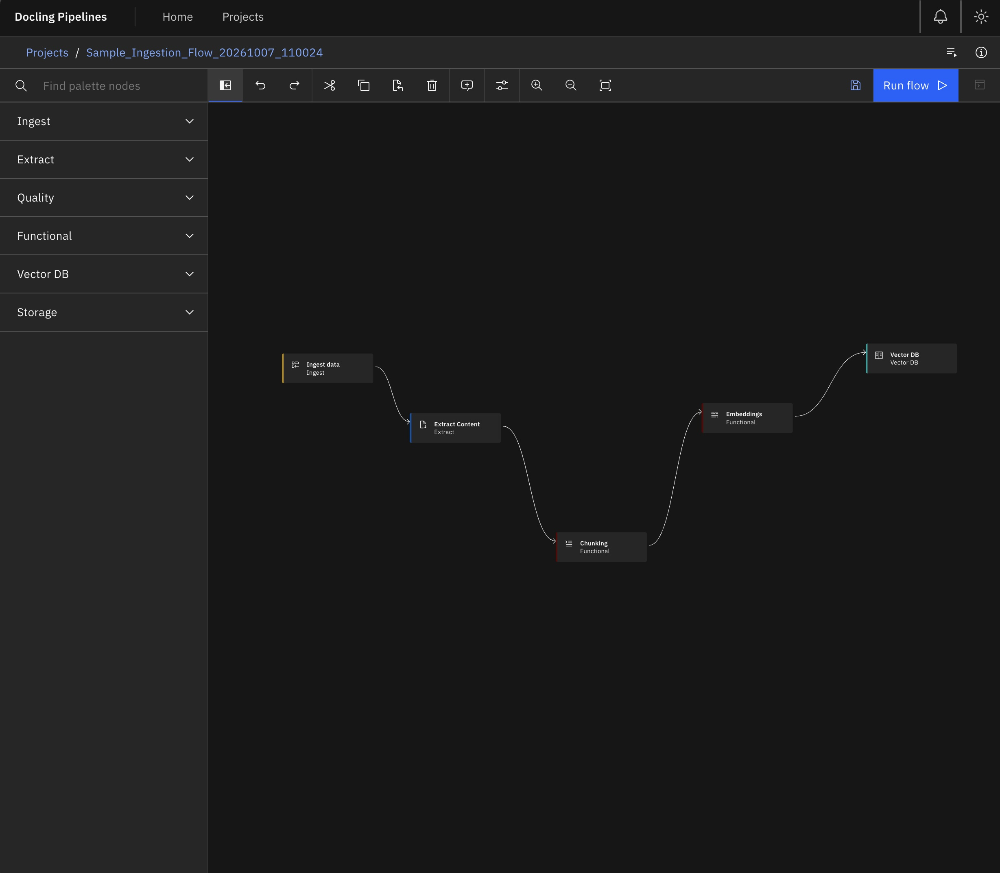
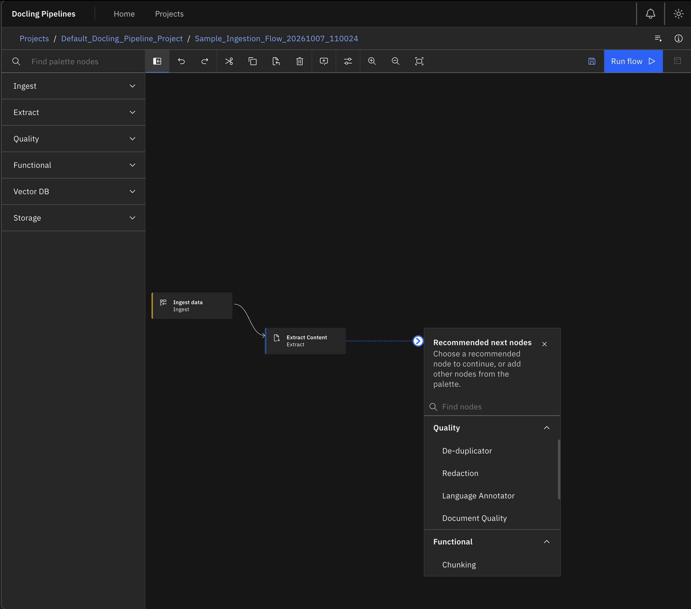
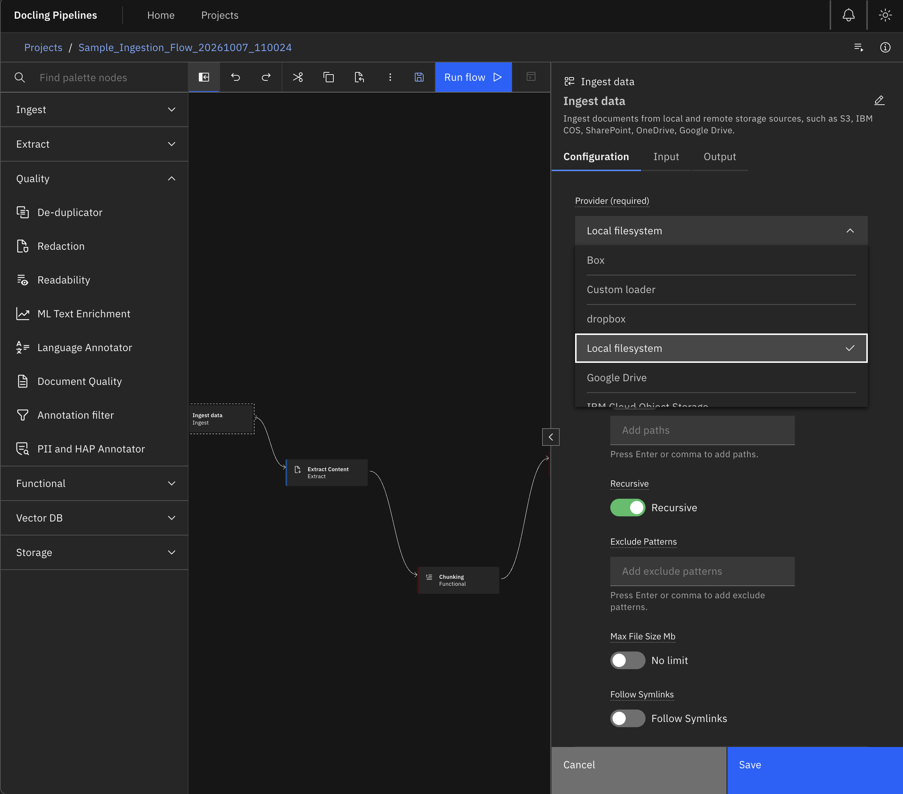
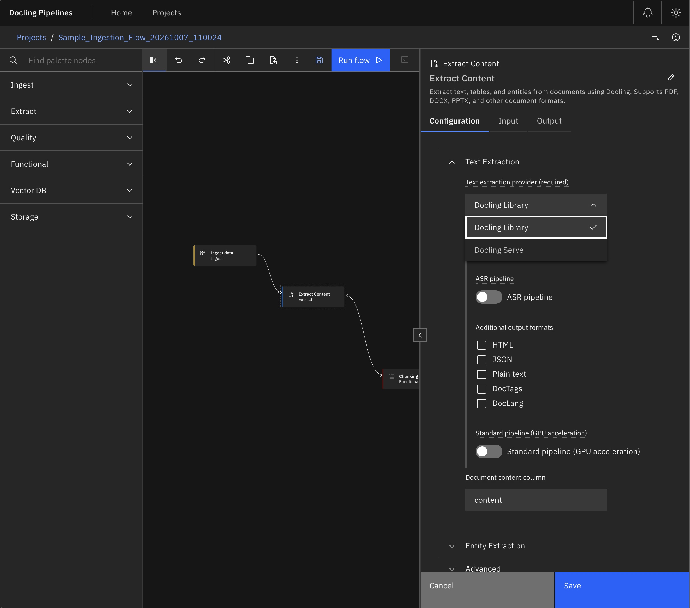
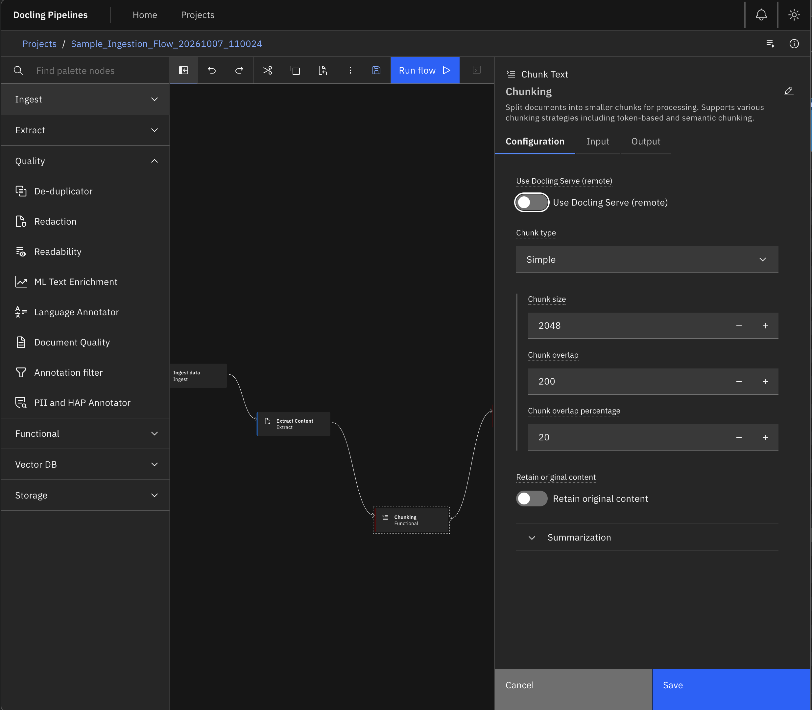
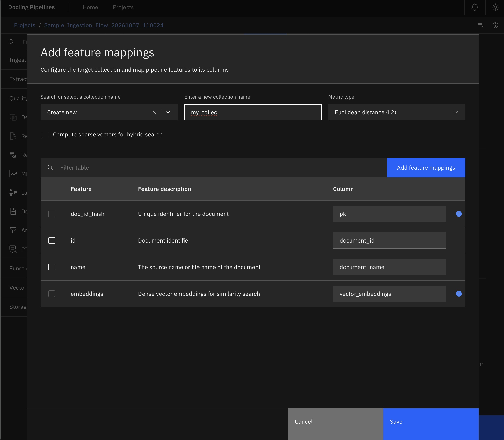
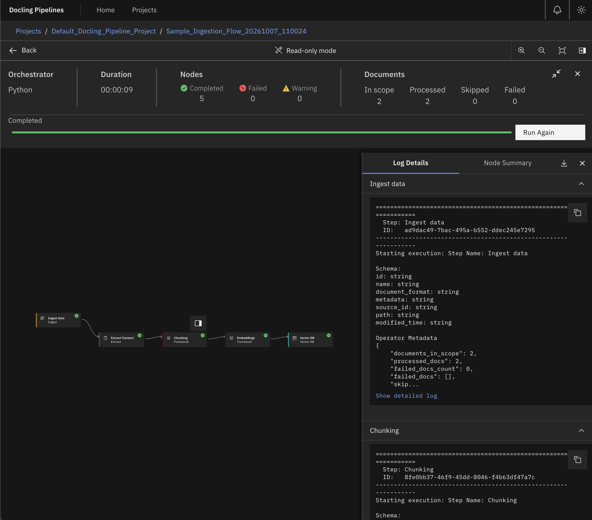

What You'll Build
In this deep-dive walkthrough, we will construct an end-to-end, multi-source ingestion DAG using the Docling Pipelines UI. The pipeline will:
- Unify Multi-Source Ingestion: Connect directly to Microsoft SharePoint, Amazon S3, Google Drive, Box, and local volumes with unified file type filtering.
- Preserve Layout with Docling: Parse complex layouts, reading order, formula notation, and table structures using the
Doclingfoundation engine and Vision-Language Models (VLMs). - Enforce Quality & Compliance in the DAG: Redact sensitive PII (SSNs, credit cards, banking info) and toxic content (HAP) with dedicated visual quality operators.
- Execute Context-Aware Hybrid Chunking: Leverage Docling's structural AST to chunk along heading hierarchies and keep tabular data intact as cohesive semantic units.
- Visually Map Schemas to VectorDB: Vectorize via LiteLLM/watsonx/Ollama and visually map PyArrow table features directly into OpenSearch or Milvus index columns via an interactive tearsheet.
- Monitor Live Execution & Micro-Batching: Observe document throughput, memory overhead, and operator logs in real time on the execution canvas.
The Visual Pipeline Canvas
Data pipelines are Directed Acyclic Graphs (DAGs). Editing them as raw JSON or Python scripts makes lineage opaque. The Docling Pipelines Canvas (built on Carbon Design and Elyra Canvas) turns pipeline design into a tactile, drag-and-drop experience.

Context-Aware Node Suggestions
Connecting nodes in a complex graph can be intimidating. When you drag an output port on the Docling Pipelines canvas into open space, the UI doesn't leave you guessing—it opens the Node Suggestion Modal.
This intelligent helper evaluates schema contracts and suggests only compatible downstream operators (e.g., prompting for Quality or Chunking steps after an Extraction node, preventing you from wiring raw Ingest directly into Embeddings).

Step-by-Step: Assembling the Workflow
1. Multi-Source Document Ingestion (ingest_source)
Double-clicking the Ingest Source operator opens its dedicated Properties Panel. Rather than writing SDK boilerplate and custom authentication loops, configure your storage provider directly in the UI.

2. Deep Layout Extraction with Docling (extract_operator)
At the core of the pipeline is the Extract Operator, powered by IBM's Docling foundation engine. Instead of flattening documents into lossy plaintext, Docling performs multi-modal visual layout analysis to extract hierarchy, tables, reading orders, and visual figures.

3. Governance & Quality Guards (pii_and_hap & doc_quality)
Strict data privacy mandates that sensitive personally identifiable information (PII) like Social Security numbers, banking IBANs, and patient identifiers—along with toxic or profane text—never enter shared vector databases.
Docling Pipelines integrates quality and safety as first-class DAG operators. Built on the PyArrow table transport, operators like pii_and_hap, doc_quality, ededup (exact deduplication), and lang_detect inspect document content in-flight. You can configure them to redact sensitive tokens in-place, annotate metadata columns for auditing, or drop non-compliant documents completely—without breaking downstream data lineage.
4. Context-Preserving Hybrid Chunking (chunker)
Naive chunkers split documents based on arbitrary token counts (e.g., every 512 tokens), slicing multi-page tables in half and disconnecting headers from sub-paragraphs.
Docling Pipelines solves this with Docling's Hybrid Chunker. Because Docling extracted the document's hierarchical Abstract Syntax Tree (AST) in the previous stage, the chunker understands semantic boundaries. Section headers travel with their corresponding paragraphs, and tables remain whole markdown structures rather than severed fragments.

5. VectorDB Schema Mapping Tearsheet (vectordb)
Schema mismatches between pipeline PyArrow columns and Vector Database collections are the #1 cause of deployment crashes. The Docling Pipelines UI eliminates this with the VectorDB Feature Mapping Tearsheet.

Live Execution & Observability
Once your flow is configured, click Run in the toolbar. The system compiles the DAG, initializes micro-batch scheduling, and navigates to the Live Run Details Canvas (/flows/:flowId/runs/:runId).

Granular Document Accounting: If document 37 in a batch of 500 contains an invalid PDF stream, Docling Pipelines does not crash the entire pipeline. The operator records the failure in the metadata, continues processing the batch, and highlights the skipped/failed item in the UI with the exact stack trace.